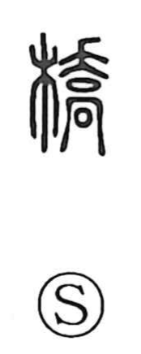

橋

Uncategorized
Kun: hashi | On: kyo
bridge
Explanation
橋 is a phono-semantic character: the wood element 木 indicates a structure of timber, while the phonetic 喬 contributes the sound. Shirakawa interprets 喬 as the image of a sacred sign tree set atop 高—a covenant chest placed before a fortress gate with a watchtower—serving as a marker that summoned the gods. In antiquity, such landmark trees were erected at both ends of a bridge, marking the crossing as a holy place. From this setting the character came to write hashi, “bridge,” and by extension takahashi, “high bridge.” Bridges over rivers were revered as sanctified sites where practices like “bridge divination” were performed: one would stand by the bridge, listen to the words of passersby, and read them as omens.